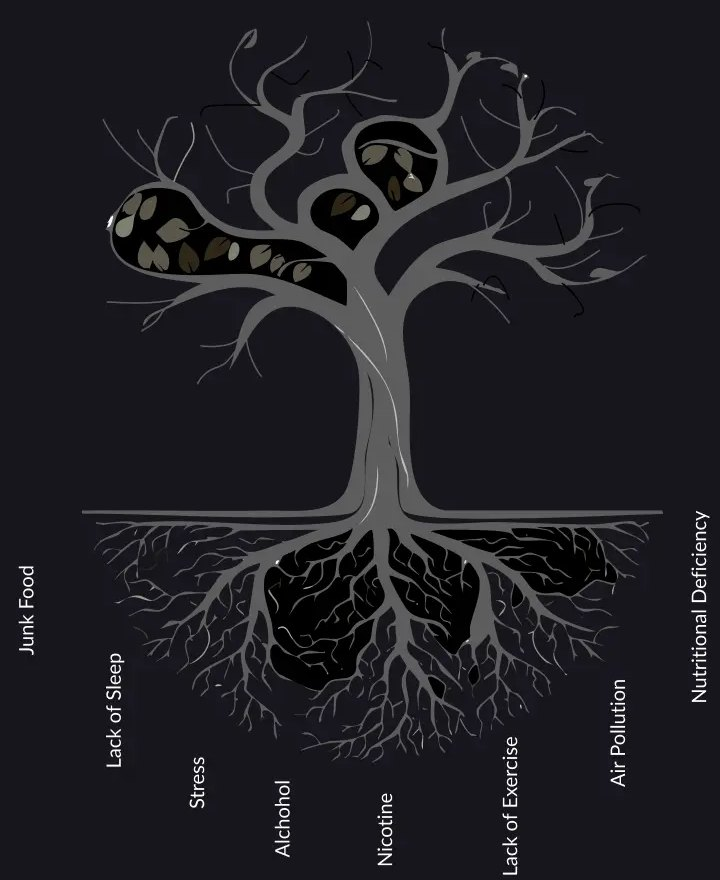
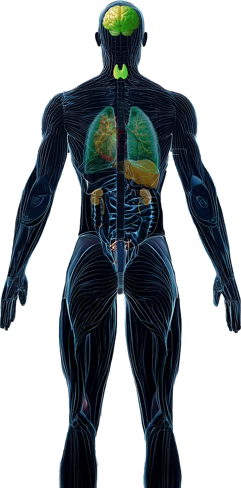
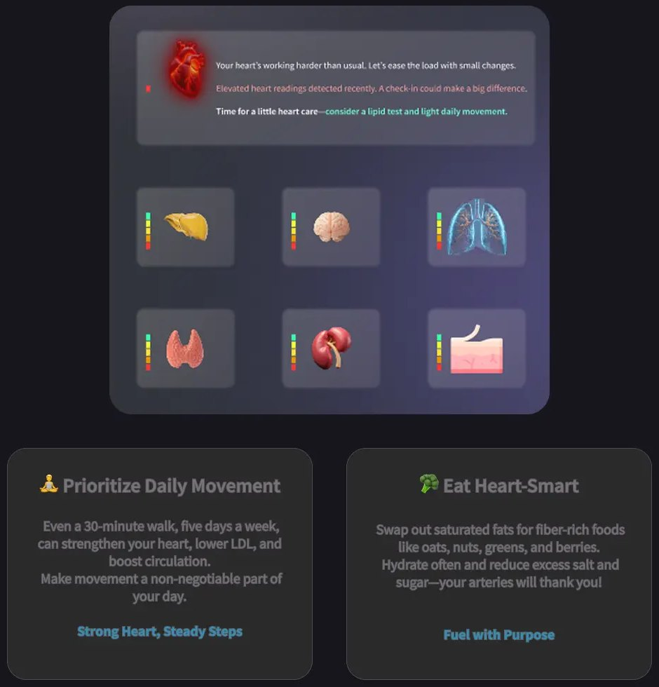
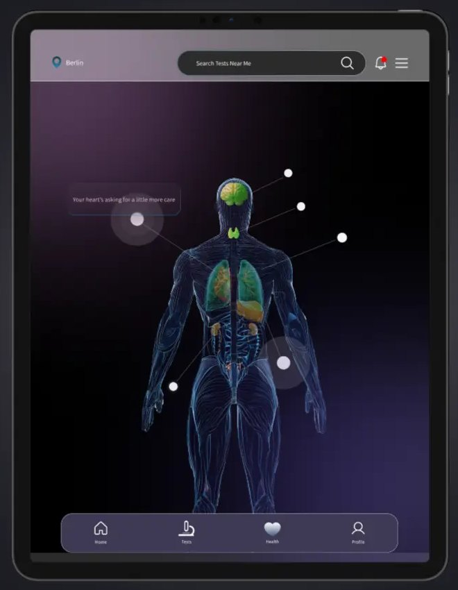
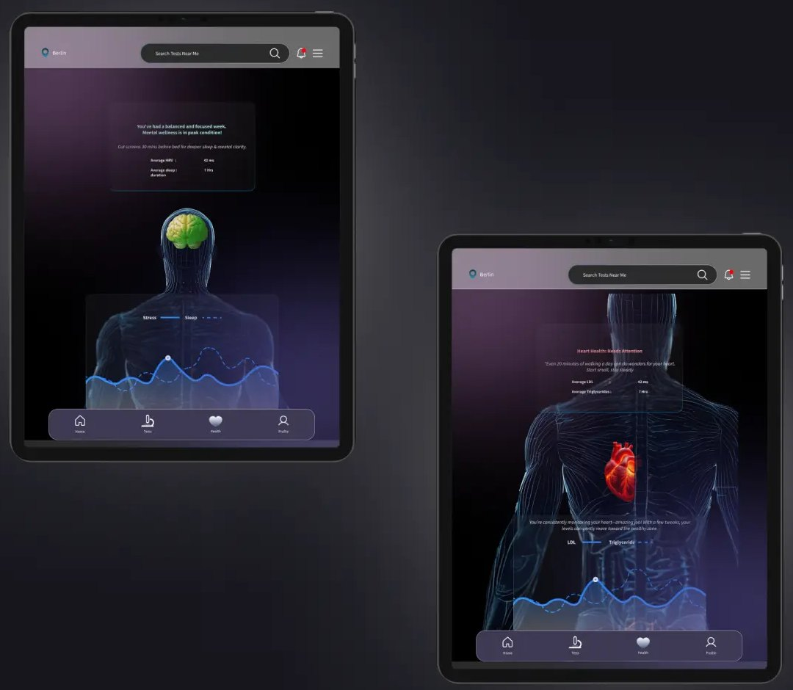
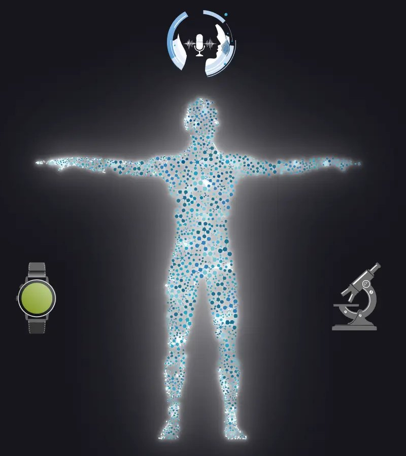

The problem
The silent shift
70%+ of deaths worldwide are caused by non-communicable diseases.
Heart disease, diabetes, thyroid imbalance, vitamin deficiencies, hormonal shifts and chronic stress develop quietly. Modern habits like a poor diet, little movement and constant stress let them build up for years without symptoms.
We already collect plenty of health data: blood tests, smartwatch stats, fitness apps. But it sits in separate places, and rarely comes together in a way that makes sense.
Early awareness and continuous monitoring are the best way to prevent long-term damage.

The idea
A health mirror
Innersync takes your test results, wearable data and personal check-ins, and turns them into something you can see at a glance: a body where every organ shows how it is doing right now.
Instead of reading numbers in a PDF, you look at your body and see where to pay attention. Tap an organ, and the app explains what changed and suggests one small step.
It's not about reacting to illness. It's about staying ahead of it.
How it works
From scattered data to clear next steps
Three kinds of input go in. Innersync combines them and gives back four things you can actually use.
- Lab reportsBlood tests, cholesterol, thyroid, vitamins
- Wearable dataHeart rate, HRV, sleep, activity
- Personal inputsMood, stress, symptoms, habits
- ReflectionsYour body map, organ by organ
- TrendsHow markers change over months
- NudgesSmall, personal suggestions
- Book testsThe right check-up, nearby
The data mirror
Every organ shows how it is doing
Each organ takes a status from your latest data. The app shows that status with colour, an icon and a short label, so it reads at a glance, even if you can't tell the colours apart.
Pick a scenario, then tap a dot to open that organ.

- Healthy
- Keep an eye on it
- Needs attention
Illustrative data for a concept. Not medical advice.
Trends over time
See the change, not just the number
A single test result says little. Innersync puts every result on a timeline, next to the healthy range, so you can spot early warnings and see your progress. In this example, the person starts daily walks in June after a nudge from the app.
LDL cholesterol
Show as a table
Illustrative data, in mg/dL. Healthy ranges are general adult guides.
Nudges
Gentle next steps, based on your data
Health apps often warn without helping. Innersync turns each signal into one small, friendly step, in a warm tone rather than an alarming one.
- Book a test"Elevated heart readings lately. A lipid test could make a big difference."
- Make a small change"Even a 30-minute walk, five days a week, can lower LDL."
- Keep a good habit"You've had a balanced week. Keep screens off 30 minutes before bed."

The interface
A closer look



Prototype
Click through it yourself
The prototype is designed for a tablet and works best on a larger screen. Use full screen for the best view.
Reflection
Your body, clearly understood
Innersync imagines health not as scattered reports and numbers, but as a clear, living picture of what is happening inside. It moves the focus from reacting to illness to staying aware every day.
It is a concept with illustrative data. If I took it further, I would:
- Test it with people who manage a long-term condition, and with people who just got a confusing lab report: do they understand the body map without help?
- Work with doctors on the thresholds and the wording, so nudges are helpful without causing alarm.
- Never rely on colour alone. The red, yellow and green statuses need icons and labels too, as in the demo above.
- Design for trust: clear consent for each data source, and control over what is stored and shared.